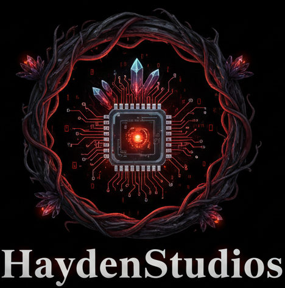

Bienvenido a la version 1.0 de HaydenStudios.net, Una versione experimental la cual no esta diseñada para
uso publico,sin embargo se puede acceder a ella sin problema siempre y cuando se acepten los Terminos y Condiciones
de Uso. En esta pagina encontraras muy poco acerca de HaydenStudios, despues de todo solo es un experimento que
decidimos hacer para poner a prueba nuestro conocimiento en html.
Por ahora esta es la informacion disponible para ti:
HaydenStudios hace su primera colaboracion!!
El equipo de HaydenStudios trabaja por primera vez en un proyecto en colaboracion con la Empresa Atenea-Diseño y Sublimacion
consiste en la creacion de la pagina web oficial de Atenea-Diseño y Sublimacionde parte del equipo de HaydenStudiosy una serie de programas de trabajo,exclusivos para la empresa
a cambio de uniformes personalizados para el personal de HaydenStudios,esta pequeña aunque prometedora colaboracion durara algunos años.
Una empresa enfocada en el desarrollo y la creacion de nuevas tecnologias trabajando con una de las mejores empresas en cuanto a Diseño y sublimacion, creando una hermosa combinacion entre el arte y la tecnologia
la Empresa Atenea-Diseño y Sublimacion da mucho de que hablar, te interesa? muy pronto podras visitar su pagina web y enterarte de muchas cosas y comprar productos geniales!
HaydenStudios trabajara tambien en una pagina web llamada "Miclovin.net" donde encotraras contenido muy divertido como videos,fotos,audios,etc. MAS INFORMAION PRONTO
HaydenStudios siempre ha sido fan del famoso juego "Minecraft" reconociendolo como un de los mas grandes juegos de la historia, y a la vez una increible herramienta de trabajo.
Minecraft es en muhos aspectos, increiblemente util y facil de entender, el juego es tan prometedor, que hemos decidido dejar de ser solo espectadores, y ser parte de la comunidad de programadores de mods
y addons, y asi llevar diversion y entretenimiento a millones de personas, y a la vez contenido educativo. Esperamos que, muy pronto puedas ver nuestros addons en la tienda del juego y aqui, en nuestra pagina web.